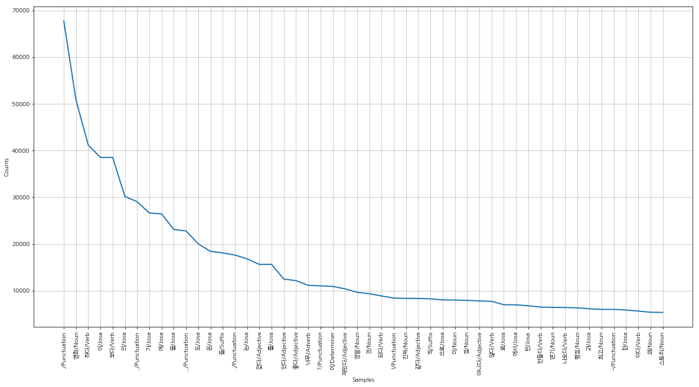

# https://cyc1am3n.github.io/2018/11/10/classifying_korean_movie_review.html
#-*- coding: utf-8 -*-
def read_data(filename):
with open(filename, 'r', encoding='utf-8') as f:
data = [line.split('\t') for line in f.read().splitlines()]
# txt 파일의 헤더(id document label)는 제외하기
data = data[1:]
return data
train_data = read_data('../ratings_train.txt')
test_data = read_data('../ratings_test.txt')
print(len(train_data))
print(len(train_data[0]))
print(len(test_data))
print(len(test_data[0]))
150000
3
50000
3
from konlpy.tag import Okt
okt = Okt()
print(okt.pos(u'이 밤 그날의 반딧불을 당신의 창 가까이 보낼게요'))
[('이', 'Noun'), ('밤', 'Noun'), ('그날', 'Noun'), ('의', 'Josa'), ('반딧불', 'Noun'), ('을', 'Josa'), ('당신', 'Noun'), ('의', 'Josa'), ('창', 'Noun'), ('가까이', 'Noun'), ('보낼게요', 'Verb')]
import json
import os
from pprint import pprint
def tokenize(doc):
# norm은 정규화, stem은 근어로 표시하기를 나타냄
return ['/'.join(t) for t in okt.pos(doc, norm=True, stem=True)]
if os.path.isfile('train_docs.json'):
with open('train_docs.json', encoding="utf-8") as f:
train_docs = json.load(f)
with open('test_docs.json', encoding="utf-8") as f:
test_docs = json.load(f)
else:
train_docs = [(tokenize(row[1]), row[2]) for row in train_data]
test_docs = [(tokenize(row[1]), row[2]) for row in test_data]
# JSON 파일로 저장
with open('train_docs.json', 'w', encoding="utf-8") as make_file:
json.dump(train_docs, make_file, ensure_ascii=False, indent="\t")
with open('test_docs.json', 'w', encoding="utf-8") as make_file:
json.dump(test_docs, make_file, ensure_ascii=False, indent="\t")
# 예쁘게(?) 출력하기 위해서 pprint 라이브러리 사용
pprint(train_docs[0])
[['아/Exclamation',
'더빙/Noun',
'../Punctuation',
'진짜/Noun',
'짜증나다/Adjective',
'목소리/Noun'],
'0']
tokens = [t for d in train_docs for t in d[0]]
print(len(tokens))
2159921
import nltk
text = nltk.Text(tokens, name='NMSC')
# 전체 토큰의 개수
print(len(text.tokens))
# 중복을 제외한 토큰의 개수
print(len(set(text.tokens)))
# 출현 빈도가 높은 상위 토큰 10개
pprint(text.vocab().most_common(10))
2159921
49895
[('./Punctuation', 67778),
('영화/Noun', 50818),
('하다/Verb', 41209),
('이/Josa', 38540),
('보다/Verb', 38538),
('의/Josa', 30188),
('../Punctuation', 29055),
('가/Josa', 26627),
('에/Josa', 26468),
('을/Josa', 23118)]
import matplotlib.pyplot as plt
from matplotlib import font_manager, rc
%matplotlib inline
font_fname = '/usr/share/fonts/NanumFont/NanumGothic.ttf'
font_name = font_manager.FontProperties(fname=font_fname).get_name()
rc('font', family=font_name)
plt.figure(figsize=(20,10))
text.plot(50)

# 시간이 꽤 걸립니다! 시간을 절약하고 싶으면 most_common의 매개변수를 줄여보세요.
selected_words = [f[0] for f in text.vocab().most_common(1000)]
def term_frequency(doc):
return [doc.count(word) for word in selected_words]
train_x = [term_frequency(d) for d, _ in train_docs]
test_x = [term_frequency(d) for d, _ in test_docs]
train_y = [c for _, c in train_docs]
test_y = [c for _, c in test_docs]
import numpy as np
x_train = np.asarray(train_x).astype('float32')
x_test = np.asarray(test_x).astype('float32')
y_train = np.asarray(train_y).astype('float32')
y_test = np.asarray(test_y).astype('float32')
from tensorflow.keras import models
from tensorflow.keras import layers
from tensorflow.keras import optimizers
from tensorflow.keras import losses
from tensorflow.keras import metrics
model = models.Sequential()
model.add(layers.Dense(64, activation='relu', input_shape=(1000,)))
model.add(layers.Dense(64, activation='relu'))
model.add(layers.Dense(1, activation='sigmoid'))
model.compile(optimizer=optimizers.RMSprop(lr=0.001),
loss=losses.binary_crossentropy,
metrics=[metrics.binary_accuracy])
model.fit(x_train, y_train, epochs=10, batch_size=512)
results = model.evaluate(x_test, y_test)
# from keras.models import load_model
# model.save('mnist_mlp_model.h5')
Epoch 1/10
150000/150000 [==============================] - 2s 13us/step - loss: 0.4306 - binary_accuracy: 0.8029
Epoch 2/10
150000/150000 [==============================] - 2s 12us/step - loss: 0.3806 - binary_accuracy: 0.8245
Epoch 3/10
150000/150000 [==============================] - 2s 12us/step - loss: 0.3652 - binary_accuracy: 0.8330
Epoch 4/10
150000/150000 [==============================] - 2s 12us/step - loss: 0.3524 - binary_accuracy: 0.8414
Epoch 5/10
150000/150000 [==============================] - 2s 12us/step - loss: 0.3407 - binary_accuracy: 0.8481
Epoch 6/10
150000/150000 [==============================] - 2s 12us/step - loss: 0.3299 - binary_accuracy: 0.8539
Epoch 7/10
150000/150000 [==============================] - 2s 12us/step - loss: 0.3192 - binary_accuracy: 0.8598
Epoch 8/10
150000/150000 [==============================] - 2s 12us/step - loss: 0.3087 - binary_accuracy: 0.8654
Epoch 9/10
150000/150000 [==============================] - 2s 11us/step - loss: 0.2984 - binary_accuracy: 0.8706
Epoch 10/10
150000/150000 [==============================] - 2s 12us/step - loss: 0.2875 - binary_accuracy: 0.8765
50000/50000 [==============================] - 2s 34us/step
results
[0.39590893244743347, 0.82676]
from tensorflow.keras.models import load_model
model.save('mnist_mlp_model.h5')
from tensorflow.keras import models
from tensorflow.keras import layers
from tensorflow.keras import optimizers
from tensorflow.keras import losses
from tensorflow.keras import metrics
from tensorflow.keras.models import load_model
model = load_model('mnist_mlp_model.h5')
model
<tensorflow.python.keras.engine.sequential.Sequential at 0x7f0b80579048>
def predict_pos_neg(review):
token = tokenize(review)
tf = term_frequency(token)
data = np.expand_dims(np.asarray(tf).astype('float32'), axis=0)
score = float(model.predict(data))
if(score > 0.5):
print("[{}]는 {:.2f}% 확률로 긍정 리뷰이지 않을까 추측해봅니다.^^\n".format(review, score * 100))
else:
print("[{}]는 {:.2f}% 확률로 부정 리뷰이지 않을까 추측해봅니다.^^;\n".format(review, (1 - score) * 100))
# from konlpy.tag import Okt
# okt = Okt()
# def tokenize(doc):
# # norm은 정규화, stem은 근어로 표시하기를 나타냄
# return ['/'.join(t) for t in okt.pos(doc, norm=True, stem=True)]
# selected_words = [f[0] for f in text.vocab().most_common(1000)]
# def term_frequency(doc):
# return [doc.count(word) for word in selected_words]
# train_x = model.x_train
# test_x = model.x_test
# train_y = model.y_train
# test_y = model.y_test
predict_pos_neg("올해 최고의 영화! 세 번 넘게 봐도 질리지가 않네요.")
predict_pos_neg("배경 음악이 영화의 분위기랑 너무 안 맞았습니다. 몰입에 방해가 됩니다.")
predict_pos_neg("주연 배우가 신인인데 연기를 진짜 잘 하네요. 몰입감 ㅎㄷㄷ")
predict_pos_neg("믿고 보는 감독이지만 이번에는 아니네요")
predict_pos_neg("주연배우 때문에 봤어요")
[올해 최고의 영화! 세 번 넘게 봐도 질리지가 않네요.]는 98.79% 확률로 긍정 리뷰이지 않을까 추측해봅니다.^^
[배경 음악이 영화의 분위기랑 너무 안 맞았습니다. 몰입에 방해가 됩니다.]는 60.11% 확률로 긍정 리뷰이지 않을까 추측해봅니다.^^
[주연 배우가 신인인데 연기를 진짜 잘 하네요. 몰입감 ㅎㄷㄷ]는 93.62% 확률로 긍정 리뷰이지 않을까 추측해봅니다.^^
[믿고 보는 감독이지만 이번에는 아니네요]는 71.52% 확률로 부정 리뷰이지 않을까 추측해봅니다.^^;
[주연배우 때문에 봤어요]는 78.34% 확률로 부정 리뷰이지 않을까 추측해봅니다.^^;
predict_pos_neg("웬만하면 평점 좋게 남기는편인데 이건아닌듯 카메라마 혼란스럽게 찍고 액션영화 보면서 중간에 졸음 쏟아지는전개는 처음 액션도 신선한거 없음... 평론가들 이게 아쿠아맨이랑 동급인 6.8점이라고? ㅋㅋ 진짜 북한이미지 좋게 나오고 반미얘기나오면 평점 높음")
[웬만하면 평점 좋게 남기는편인데 이건아닌듯 카메라마 혼란스럽게 찍고 액션영화 보면서 중간에 졸음 쏟아지는전개는 처음 액션도 신선한거 없음... 평론가들 이게 아쿠아맨이랑 동급인 6.8점이라고? ㅋㅋ 진짜 북한이미지 좋게 나오고 반미얘기나오면 평점 높음]는 99.24% 확률로 부정 리뷰이지 않을까 추측해봅니다.^^;